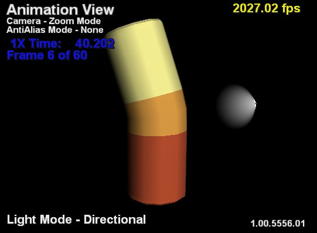
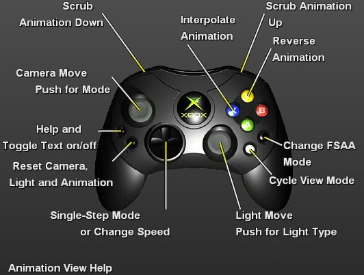

Animation View mode enables the user to view the animation of a model.

Illustration Animation View. The upper-left corner shows the camera and antialiasing modes. It also shows animation speed and the frame of the animation. The upper-right corner gives the frame rate. The lower-right corner gives the version number for XbView and the lower-left corner gives the light mode.
Pushing the Back button brings up the help diagram below. Pushing Back again shows the animation without any of the XbView text. Pushing Back one last time restores you to the default Animation View.

The left thumbstick controls the camera exactly like it does in Model View mode.
The right thumbstick controls the lights in the scene. Clicking the right thumbstick allows you to cycle between an ambient light and a directional light. Light colors can only be changed in the Model View. In directional mode, moving the right thumbstick rotates the light source around the center point.
The D-pad and triggers are used to change the animation modes and animate the model. Pressing the D-pad up or down either unpauses the animation or, if the animation is already unpaused, speeds up or slows down the animation. The possible speeds are 10×, 4×, 2×, 1×, 1/2×, 1/4×, 1/10×. Pushing the D-pad left or right either pauses the animation, or if the animation is already paused, single steps the animation frames either forward (pushing right) or backward (pushing left.) The two triggers put the animation in scrub mode: pushing the left triggers scrubs the animation backward and pushing the right trigger scrubs the animation forward. The triggers are analog so the more the trigger is pulled the faster the scrubbing. When the animation reaches its limits, the scrubber will stop. While scrubbing, the D-pad will behave as though the animation is paused.
The Y (yellow) allows you to reverse the animation playback. Pressing it a second time reverts the animation to forward playback. The X (blue) button puts XbView into Interpolate mode. The animation is stored as a series of frames sampled at 30 frames per second. Interpolate mode simply smoothes out the animation between the samples so that the animation, rather than playing back as a series of frames, plays back smoothly, especially in slow motion (playbacks modes like 1/2×, 1/4×, 1/10×.) You can toggle this on or off by pressing the button multiple times. XbView displays "Interpolate Mode" under the frame rate when interpolation mode is on.
The animation frame currently set in the scrubber in Deep Exploration is passed into XbView so the views match in the Animation View when XbView starts up or is reset. The animation always starts paused, and pressing Start will pause the animation at the frame passed in.
The current frame of the animation, current animation mode, and playback speed are displayed in blue below the camera and antialias mode.
The Black button on the controller controls the antialias mode, exactly as it does in Model View mode.